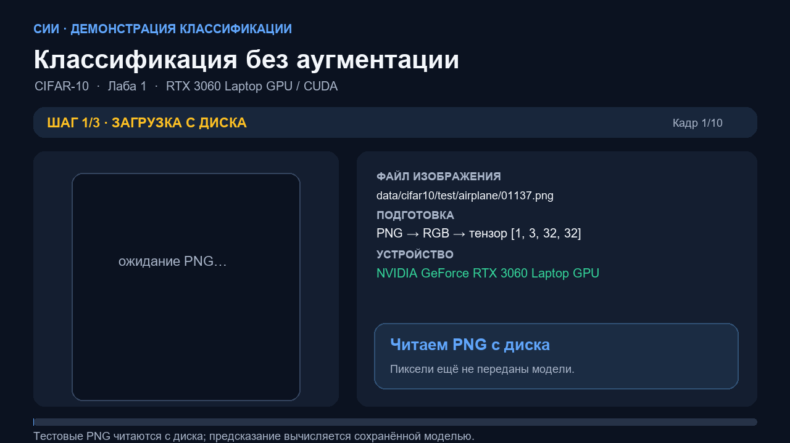
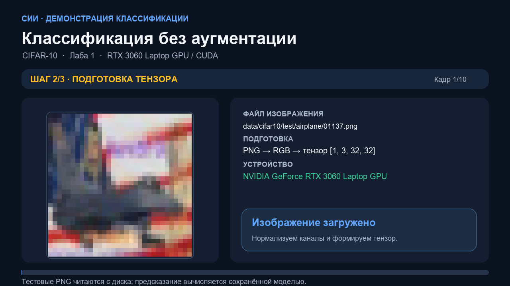
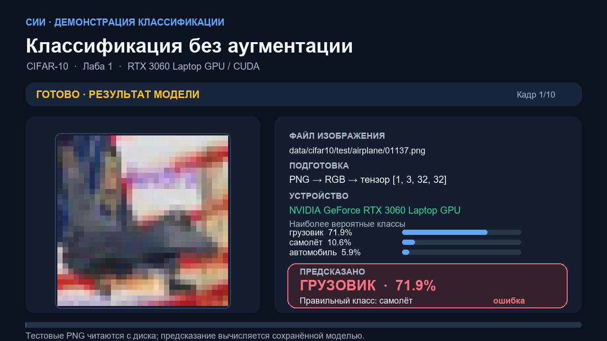
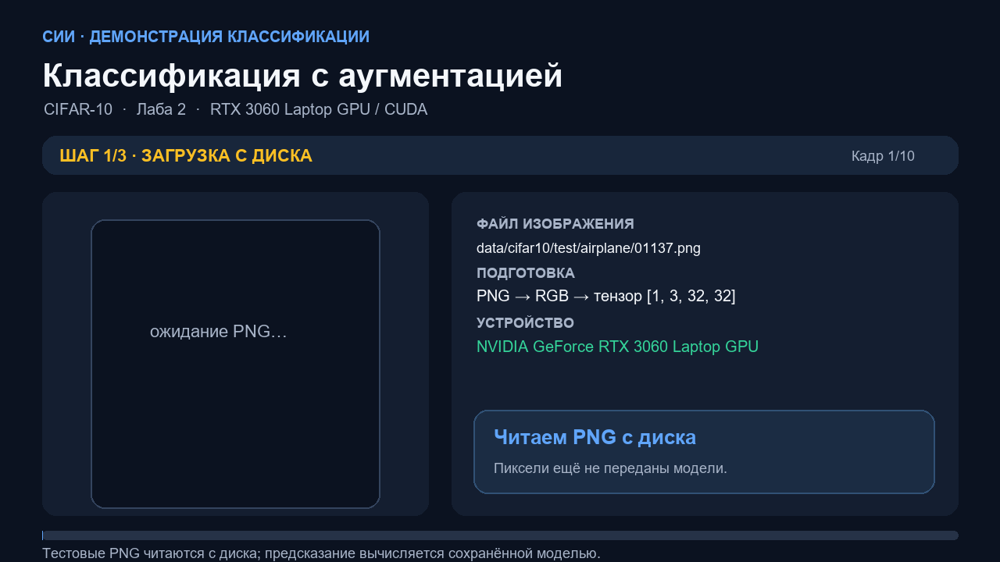
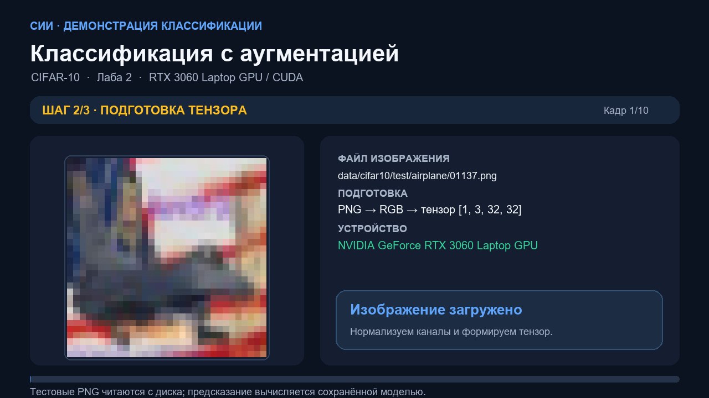
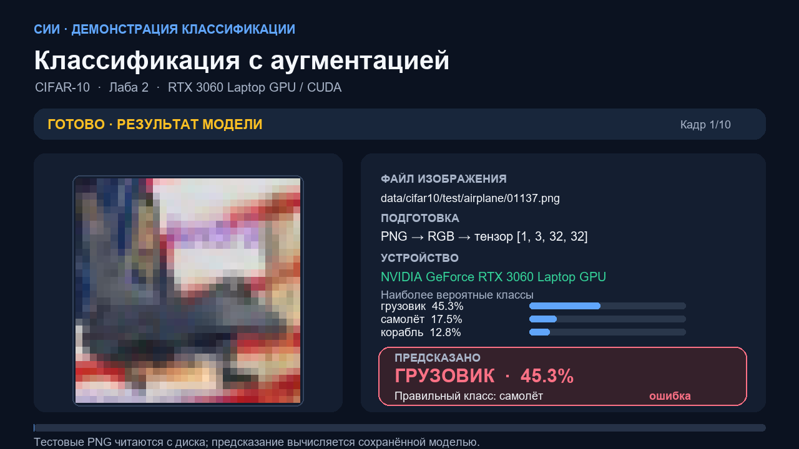

СИСТЕМЫ ИСКУССТВЕННОГО ИНТЕЛЛЕКТА · CIFAR-10
Как нейросеть распознаёт изображение
Откройте эту страницу в браузере прямо из папки распакованного архива. Видео и изображения загружаются из соседних файлов, интернет не нужен.
Лабораторная 1 · CNN без аугментации
Тестовое изображение читается из PNG, преобразуется в тензор, затем сеть вычисляет класс и вероятности на CUDA.



Лабораторная 2 · CNN с аугментацией
Та же последовательность инференса для той же десятки примеров, теперь с весами модели, обученной на аугментированных данных.



Как читать демонстрацию
В каждом ролике используются реальные тестовые PNG и сохранённые веса модели. Видеоряд собран как наглядная анимированная демонстрация стадий пайплайна, с одинаковой длительностью кадров для удобства доклада; в протоколе JSON сохранены фактические классы и вероятности инференса. Ошибочные ответы намеренно оставлены.
Модель без аугментации: test accuracy 88,77%. Модель с аугментацией: 89,50%.